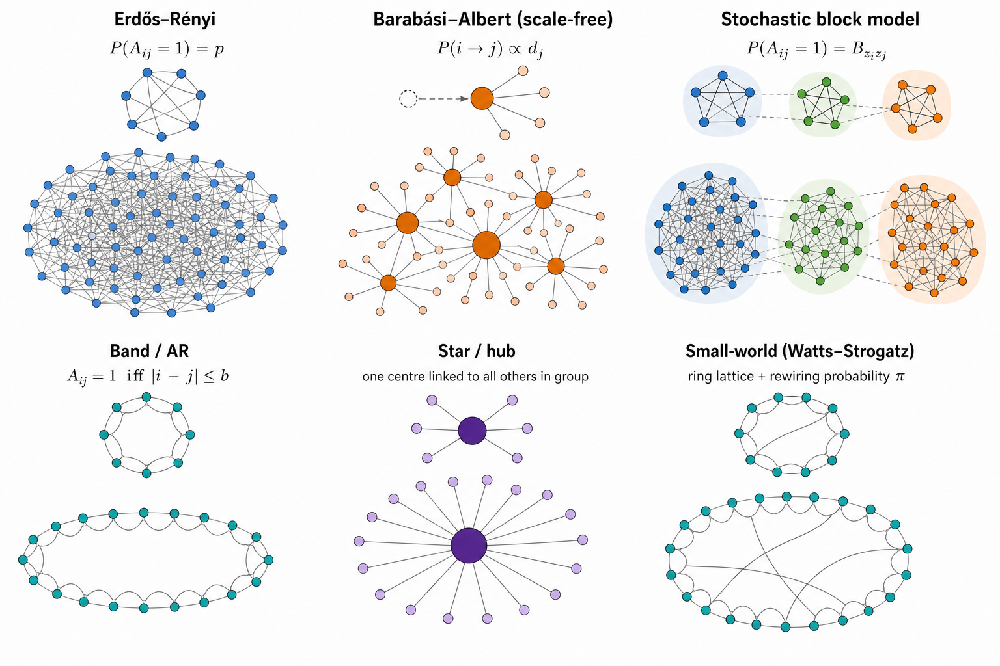

flowchart LR G["Undirected graph G"] --> W["Signed weights W(G)"] W --> Omega["SPD precision Ω"] Omega --> Latent["Latent Gaussian X"] Mu["Mean design μ"] --> Latent Latent --> Obs["Observation layer"] Latent -.-> Obs
Simulating high-dimensional Gaussian Markov regulatory networks
2026-08-05
Source:vignettes/random-network-generation.qmd
Overview
A Gaussian Markov network simulation has four conceptually separate layers (Equation 1). For non-Gaussian expression data, a fifth observation layer can be added (e.g. Poisson–log-normal counts or zero-inflated measurements).
G \longrightarrow W(G) \longrightarrow \Omega \succ 0 \longrightarrow X_i \sim \mathcal{N}_p(\mu_i,\Omega^{-1}) \tag{1}
Here G is an undirected graph, W(G) a symmetric weighted matrix with the same off-diagonal support, \Omega a strictly positive-definite precision, and X_i an expression profile. The graph and the precision must not be conflated: a binary adjacency is almost never itself positive definite, so a separate weighting and regularisation step is required.
This vignette covers undirected Gaussian Markov / precision-graph simulation only.
DeCovarT’s synthetic helpers follow the same split (synthetic scenarios vignette): generate_random_network_skeleton() draws G, and build_normalised_precision() completes it to \Omega\succ 0 by an affine spectral shift.
Graph structure generators
Evidence from the literature
Table 1 summarises how recent simulation studies combine topology, precision construction, and mean / observation models.
| Source | Graph structures | Precision construction | Mean / observation | Purpose |
|---|---|---|---|---|
| PLNnetwork (Chiquet et al. 2018) | Erdős–Rényi, preferential attachment, affiliation | \Omega = vG + \operatorname{diag}(\lvert\lambda_{\min}(vG)\rvert + u) | Latent log-abundance XB; compositional / multinomial counts | Count-network estimators under compositionality |
| SILGGM (Zhang et al. 2018) | Band, hub, Erdős–Rényi, scale-free via huge
|
Package covariance / precision simulation | Centred Gaussian; focus on precision entries | Large-p inferential and computational stress tests |
| BLGGM (Wu and Luo 2022) | Block mixtures of dense, circle, star, signed modules | Module matrices with structured signed off-diagonals | Cell-type-specific \mu_k, \Omega_k; expression-dependent dropout | Joint clustering, heterogeneous networks, zero inflation |
| Structure learning / modular GRNs (Federico et al. 2023) | Modular and related hierarchical graphs | GGM linked to each graph | Shared structure across related networks; n\ll p | Modular constraints and information sharing |
Several conclusions follow.
- Band is not intrinsically a random-graph model: its support is usually deterministic once the bandwidth is fixed (edge weights and signs may still be random). Hub constructions are often partly deterministic as well. Erdős–Rényi, preferential attachment, and stochastic block models are genuinely stochastic.
- A positive off-diagonal entry in \Omega encodes a negative partial correlation (Equation 2). Uniformly positive precision weights therefore induce uniformly negative edgewise partial correlations; random or signed biological weights are needed when activation-like and inhibition-like associations matter.
- These models target undirected conditional dependence. Federico and colleagues prefer a Markov-network representation when observational data do not justify edge directionality (Federico et al. 2023).
- BLGGM as a hybrid topology design. Wu and Luo’s simulation can be read as two nested layers (Wu and Luo 2022). At the global scale, genes are partitioned into blocks (a stochastic-block–like partition). Within each block, a finer local topology is specified—dense clique-like modules, circles, stars / hubs, or signed dense substructures—so that different blocks can stand for distinct regulatory regimes (e.g. dense co-expression programmes, cyclic signalling motifs, master-regulator hubs). Signs can also differ across modules or cell types. This is richer than a flat ER draw, yet still fully undirected.
\rho_{jk\mid -\{j,k\}} = -\frac{\Omega_{jk}}{\sqrt{\Omega_{jj}\Omega_{kk}}} \tag{2}
Table 2 compares the main undirected topology families used in GGM benchmarks, with R entry points. Figure 2 sketches the six families most often used in random-like network structure generation.
| Structure | Definition and controls | R entry points | Advantages | Limitations |
|---|---|---|---|---|
| Erdős–Rényi | Each edge present independently with probability q; q=d_{\mathrm{avg}}/(p-1) targets average degree |
huge::huge.generator(graph="random") (Jiang et al. 2026); BDgraph::graph.sim(graph="random") (Mohammadi and Wit 2025)
|
Exact sparsity control in expectation; few nuisance parameters | Narrow degree distribution; little modular organisation |
| Band / AR | Edge j–k if 1\le\lvert j-k\rvert\le b |
huge.generator(graph="band") (Jiang et al. 2026); BDgraph::bdgraph.sim(graph="AR(1)") / "AR(2)" (Mohammadi and Wit 2025)
|
Local dependence and controlled max degree | Artificial gene ordering; no hubs or modules |
| Hub / star | g groups; one centre linked to remaining members |
huge.generator(graph="hub") (Jiang et al. 2026); graph.sim(graph="hub") / "star" (Mohammadi and Wit 2025)
|
Stress-tests high-degree regulators | Pure stars omit cross-talk |
| Scale-free | Preferential attachment (e.g. Barabási–Albert with m edges per new node) |
huge.generator(graph="scale-free") (Jiang et al. 2026); DeCovarT graph_model = "scale_free"
|
Heterogeneous degrees | Weak modularity under plain BA growth |
| Cluster / SBM | Within-block edge probability exceeds between-block |
huge.generator(graph="cluster") (Jiang et al. 2026); DeCovarT graph_model = "stochastic_block_model"
|
Pathway / module structure | Equal blocks can be unrealistically regular |
| Small-world / lattice / circle | High clustering with short paths, or fixed neighbourhoods | DeCovarT graph_model = "small_world" (Watts–Strogatz); BDgraph::graph.sim(graph="smallworld") (Mohammadi and Wit 2025)
|
Local modules and spatial organisation | Narrow degrees; needs a defensible ordering |
Biological relevance of the six families
Not every topology is equally useful as a gene-regulatory prior. The three simulation studies in Table 1, together with classical network biology, suggest the following reading.
| Family | Biological reading | Why it matters for DeCovarT |
|---|---|---|
| Star / hub | Master-regulator TF with many targets; one-to-many signalling | Stress-tests recovery of a few high-degree hubs that dominate partial correlations (Wu and Luo 2022; Federico et al. 2023) |
| Scale-free (BA) | Preferential attachment produces a heavy-tailed degree distribution and several hubs (Barabási and Albert 1999) | Standard high-dimensional GGM stress test used by SILGGM via huge (Zhang et al. 2018); useful for testing degree heterogeneity, but not a default empirical model of gene regulation |
| Cluster / SBM | Co-regulated modules / pathways with dense within-block links | Matches pathway organisation; BLGGM’s global block partition is SBM-like before finer within-block motifs (Wu and Luo 2022) |
| Small-world | High local clustering with short paths (ring + shortcuts) | Local co-expression neighbourhoods plus long-range regulatory shortcuts; useful when modularity is soft rather than hard blocks (Federico et al. 2023) |
| Band / AR | Ordered local dependence only | Useful numerical control, but gene indices rarely encode a natural order—limited biological fidelity (Zhang et al. 2018) |
| Erdős–Rényi | Homogeneous random wiring | Null / baseline sparsity; little pathway or hub structure (Zhang et al. 2018) |
The scale-free hypothesis: a useful stress test, not a biological default
The phrase scale-free network usually means that the degree distribution follows a power law, \Pr(K=k)\propto k^{-\alpha}, at least above a lower cut-off. This statistical statement is distinct from the Barabási–Albert (BA) growth mechanism. Preferential attachment can generate a power law, but observing a heavy-tailed degree distribution does not establish preferential attachment; other mechanisms can produce similar tails, and variants of preferential attachment need not produce a pure power law (Lima-Mendez and van Helden 2009; Broido and Clauset 2019).
Whether biological networks are scale-free has therefore remained contested. Early claims often relied on approximately straight log–log degree plots. Such plots are not goodness-of-fit tests: binning, the plotting scale, a small number of hubs, and incomplete or biased sampling can all make non-power-law distributions appear linear. The underlying graph representation matters as well. For example, pool metabolites can become artificial hubs in metabolic graphs, while protein-interaction networks depend strongly on the assay and sampling scheme (Lima-Mendez and van Helden 2009). A power law should instead be fitted to the discrete degree data, tested for plausibility, and compared on the same support with alternatives such as log-normal, exponential, stretched-exponential, and power-law-with-cut-off distributions.
The evidence is not uniformly negative. Using adjacency-spectrum distributions rather than degree alone, Takahashi and colleagues classified eight protein–protein interaction networks as scale-free (Takahashi et al. 2012). Importantly, this was a relative model-selection result: BA-like networks fitted better than the two candidate alternatives, Erdős–Rényi and Watts–Strogatz networks. It did not show that a power law was an adequate absolute model, that preferential attachment generated the observed networks, or that unobserved interactions would preserve the classification. The authors explicitly noted both the restricted candidate set and possible sampling artefacts.
A broader test of 928 real-world network data sets reached a more cautious conclusion (Broido and Clauset 2019). Across all domains, only 4% met the strongest scale-free criterion, whereas a log-normal distribution fitted as well as or better than a power law for 88% of degree distributions. Among the biological networks, 63% showed neither direct nor indirect evidence of scale-free structure, although 6% met the strongest criterion, principally metabolic networks. These proportions depend on the network corpus and the operational definition of scale-freeness, but they reject a universal scale-free law rather than excluding scale-free structure from every biological system.
For DeCovarT, a BA graph should consequently be interpreted as a deliberately demanding hub-heterogeneity benchmark. It tests whether covariance estimation and deconvolution recover a few high-degree vertices without claiming that a gene-regulatory network grew by preferential attachment. Results should be compared with density-matched SBM, small-world, star, and Erdős–Rényi scenarios. Conclusions that depend only on the BA scenario should be labelled topology-specific; hub recovery, robustness to vertex removal, and biological realism do not follow from a fitted heavy tail alone.
BLGGM as a hybrid. Wu and Luo combine an SBM-like global gene partition with local dense, circle, star, or signed modules inside blocks (Wu and Luo 2022). Distinct local motifs can stand for distinct processes (e.g. master-regulator stars vs dense co-expression programmes). DeCovarT’s exported generators currently expose the three families most useful as standalone benchmarks: scale_free, stochastic_block_model, and small_world.
Package roles (R)
-
igraph(Csárdi et al. 2026) — DeCovarT draws the three undirected skeletons used in simulation (scale_freeviasample_pa(),stochastic_block_modelviasample_sbm(),small_worldviasample_smallworld()). -
huge(Jiang et al. 2026) — compact end-to-end GGM benchmark viahuge.generator(): topology, SPD precision, covariance, and \mathcal{N}_p samples. Supports random, hub, cluster, band, and scale-free graphs (Zhang et al. 2018); useful as a literature comparator, not the DeCovarT skeleton backend. -
BDgraph(Mohammadi and Wit 2025) —graph.sim()/bdgraph.sim()cover overlapping families plus small-world and scale-free;rgwish()samples G-Wishart precisions on a fixed graph. -
bnlearn(Scutari 2026) — directed / DAG and some undirected structure learning; helpful when the scientific story is causal or when comparing directed versus undirected ground truths. - Prefer keeping the same topology → weight → SPD → mean pipeline when swapping generators, so differences reflect the graph family rather than an incidental change of SPD or sampling code.

Weight design and random signs
Topology generators return a binary undirected support E. Signs and magnitudes are a separate design layer W(G) in Equation 1: they are assigned after (or jointly with) the skeleton, then completed to an SPD precision. Remember that
\operatorname{sign}(\rho_{jk\mid -\{j,k\}}) = -\operatorname{sign}(\Omega_{jk}) \tag{3}
(Equation 2), so a positive precision weight is an inhibitory partial correlation. Table 4 contrasts three standard undirected strategies.
| Approach | What is randomised | How \Omega is obtained | When to use |
|---|---|---|---|
| i.i.d. edge signs | For each \{j,k\}\in E, draw s_{jk}\in\{-1,+1\} (e.g. fair coin or \mathbb{P}(+)=\pi) and magnitude m_{jk}>0; set W_{jk}=W_{kj}=s_{jk}m_{jk} | Support-preserving SPD map of W (spectral shift, diagonal dominance, …) | Simple signed ER / hub / SBM benchmarks; explicit control of the inhibitory fraction |
| Partial-correlation scaling | Fill a symmetric matrix R with R_{jk}=0 off E and R_{jk}\in(-1,1) (signed) on E; ensure \rho(R)<1 | \Omega = D^{1/2}(I-R)D^{1/2} (Equation 6) | Direct control of partial-correlation signs and strengths |
G-Wishart (BDgraph::rgwish()) |
Continuous random \Omega on the fixed graph zeros | \Omega\sim W_G(b,D) already SPD (Mohammadi and Wit 2025, 2019) | Heterogeneous random weights without hand-tuned magnitudes; Bayesian-style replicates |
i.i.d. signs on a fixed skeleton
Draw G (ER, band, hub, …). Independently for each undirected edge,
W_{jk}=W_{kj}=s_{jk}\,m_{jk}, \qquad s_{jk}\in\{-1,+1\}, \quad m_{jk}>0, \tag{4}
then apply a support-preserving SPD completion (next section). Uniform positive loadings W=vG are the special case s_{jk}\equiv +1 used by PLN-style and many huge simulations (Chiquet et al. 2018)—all partial correlations then share the same sign.
Partial-correlation scaling and why I-R
In a Gaussian Markov model the matrix of partial correlations (with ones on the diagonal) relates to the precision by a diagonal congruence. Write the off-diagonal partial correlations as a symmetric matrix R with
R_{jj}=0, \qquad R_{jk} = \begin{cases} \rho_{jk\mid -\{j,k\}} & \{j,k\}\in E,\\ 0 & \{j,k\}\notin E, \end{cases} \tag{5}
and choose magnitudes so that the spectral radius satisfies \rho(R)<1. Then
\Omega = D^{1/2}(I-R)D^{1/2} \tag{6}
for a positive diagonal D (often D=I after standardising margins).
Why subtract from the identity? The precision encodes conditional dependence. For a correlation-type matrix, I-R places ones on the diagonal (self-precision after scaling) and negatives of the partial correlations off the diagonal, matching Equation 3: if R_{jk}>0 (positively partially correlated variables), then (I-R)_{jk}<0, hence \Omega_{jk}<0.
G-Wishart draws on a fixed graph
Given adjacency G, BDgraph::rgwish() samples \Omega\sim W_G(b,D) already positive definite and with \Omega_{jk}=0 whenever (j,k)\notin E (Mohammadi and Wit 2025, 2019). Signs and magnitudes arise from the continuous distribution rather than from an explicit coin-flip layer. This is the most “automatic” signed-weight generator once the skeleton is fixed; the trade-off is less direct control of the inhibitory fraction than Equation 4 or Equation 6.
Positive-definiteness strategies
Table 5 contrasts constructions that turn a weighted support W (or a partial-correlation design) into \Omega\succ 0.
| Construction | Formula | SPD? | Preserves exact support? | Behaviour |
|---|---|---|---|---|
| Uniform spectral shift | \Omega=W+\max(0,\varepsilon-\lambda_{\min}(W))I | Yes | Yes | Same shift on every eigenvalue; off-diagonals (hence signs) unchanged |
huge / PLN-style loading |
Diagonal load from \lvert\lambda_{\min}\rvert, baseline, and u | Yes | Yes | v sets edge magnitude; loading sets conditioning (Chiquet et al. 2018) |
| Partial-correlation scaling | \Omega=D^{1/2}(I-R)D^{1/2} with \rho(R)<1 | Yes | Yes | Signs and strengths set on the partial-correlation scale (Equation 6) |
| Graph Laplacian / M-matrix | \Omega=L_G+\varepsilon I | Yes | Yes | Off-diagonals non-positive ⇒ all edgewise partial correlations positive |
| G-Wishart | \Omega\sim W_G(b,D) | Yes | Yes | Heterogeneous random weights; BDgraph::rgwish() (Mohammadi and Wit 2025)
|
| Eigenvalue clipping | Clip \Lambda then reconstruct Q\Lambda Q^{\top} | Yes | No | Fills structural zeros |
| Nearest PD projection | e.g. Matrix::nearPD() (Bates et al. 2025)
|
Yes | No (in general) | Repair tool, not a support-preserving truth |
Why the uniform spectral shift is attractive
If W=Q\Lambda Q^{\top}, then (Equation 7)
W+cI = Q(\Lambda+cI)Q^{\top}. \tag{7}
Every eigenvalue increases by c, while every off-diagonal of W is unchanged, so the edge set
E=\{(j,k):j<k,\ \Omega_{jk}\neq 0\} \tag{8}
is identical before and after loading—and signs of W are preserved.
The floor \varepsilon also controls the condition number
\kappa(\Omega)=\frac{\lambda_{\max}(\Omega)}{\lambda_{\min}(\Omega)}. \tag{9}
Large loading yields a well-conditioned but weakly dependent network; loading only slightly above -\lambda_{\min} strengthens dependence but can make estimation fragile. Benchmarks should report partial-correlation distributions and \kappa(\Omega), not only the adjacency.
Conclusions
DeCovarT draws
scale_free,stochastic_block_model, andsmall_worldskeletons with , then i.i.d. signed weights (prop_inhibitory) and a spectral shift to guarantee \Omega\succ 0.
Further high-dimensional designs
Beyond the families in Table 2:
- Degree-prescribed / configuration graphs separate degree heterogeneity from preferential-attachment mechanisms.
- Spatial / geometric graphs suit spatial transcriptomics or chromatin neighbourhoods.
-
Differential networks:
- Start from a shared base G_0
- Control the differential shift \Omega_k=\Omega_0+\Delta_k
- Ensure the SPD step
- Alternatively, vary the support, weight, and sign separately (Federico et al. 2023; Wu and Luo 2022).
-
Other distributions, using the GGM layer as a parameter:
- Latent-variable GGMs — sparse \Omega_S plus low-rank confounding Bf_i.
- Nonparanormal / Gaussian-copula margins on a latent Gaussian graph.
- Poisson–log-normal / compositional observation layers on latent log-abundances (Chiquet et al. 2018).
- Zero-inflated mixture GGMs with cell-type-specific (\mu_k,\Omega_k) and expression-dependent dropout (Wu and Luo 2022).
When mean variation should not be omitted
For X\sim\mathcal{N}_p(\mu,\Omega^{-1}),
X_j \perp X_k \mid X_{-\{j,k\}} \quad\Longleftrightarrow\quad \Omega_{jk}=0. \tag{10}
The mean does not appear in Equation 10, so pure support-recovery studies often set \mu=0 after centring (Zhang et al. 2018). That is inadequate when the simulation should mimic expression: pooling groups with distinct \mu_{g(i)} induces between-group covariance
\operatorname{Cov}(X) = \operatorname{E}\{\operatorname{Cov}(X\mid g)\} + \operatorname{Cov}\{\operatorname{E}(X\mid g)\}, \tag{11}
which can be mistaken for network structure. PLNnetwork therefore includes covariates / offsets, and BLGGM jointly models cell-type means, precisions, and dropout (Chiquet et al. 2018; Wu and Luo 2022).
Table 6 crosses mean variations with network changes:
| Mean scenario | Construction | Question tested |
|---|---|---|
| Null mean | \mu_i=0 | Pure graph / precision recovery |
| Sparse DE | Few marker coordinates differ by group | Robustness to phenotype shifts |
| Dense low-rank | \mu_i = Bz_i | Batch / cell-state confounding |
| Mean and network heterogeneity | Both \mu_k and \Omega_k vary | Separating DE from differential connectivity |
Recommended benchmark specification
Use one pipeline for every topology (Equation 12, Figure 1):
\text{topology} \rightarrow \text{signed weights} \rightarrow \text{SPD precision} \rightarrow \text{mean design} \rightarrow \text{latent Gaussian} \rightarrow \text{observation model} \tag{12}
| Axis | Suggested levels |
|---|---|
| Dimension, namely number of variables (here, genes) | p \in \{100,500,1000\} |
| Topology | ER, band, hub, scale-free, SBM, small-world |
| Expected degree | \approx 2,4,8 (keep graphs sparse) |
| Edge weights | Constant; i.i.d. signed; partial-correlation scaling; G-Wishart |
| Conditioning | Report \lambda_{\min}, \lambda_{\max}, \kappa(\Omega) |
| Means | Zero; sparse group shifts, driven by cell-type; joint \mu–\Omega heterogeneity, for example playing on the cosine similarity, or the condition number, of the mean profile |
Main insights. Prefer the uniform spectral shift (Equation 7) or partial-correlation scaling (Equation 6) when support and signs must be exact; add the mean layer independently of graph generation.
Nine factorial simulation scenarios
The script scripts/generate_random_network_skeleton.R builds a 3\times 3 grid of undirected Markov-network moments. Notation matches the manuscript: G genes and N bulk samples for \boldsymbol{Y}\in\mathcal{M}_{G\times N}.
\begin{aligned} \text{topology} &\in \{\text{scale-free (A)},\ \text{SBM (B)},\ \text{small-world (C)}\}, \\ \rho &\in \{0.05,\,0.35,\,0.70\} \quad\text{(cosine levels 1–3)}, \\ \text{prop. inhibitory edges} &= \tfrac12, \qquad \text{target }\kappa(\boldsymbol{\Omega}) \approx 50. \end{aligned} \tag{13}
Scenario IDs are \mathtt{A1}–\mathtt{C3} (topology letter × cosine level). Table 8 reports realised diagnostics for each run (seeded).
if (requireNamespace("DeCovarT", quietly = TRUE)) {
library(DeCovarT)
} else {
stop("Package 'DeCovarT' is not installed.")
}
G <- 60L
N <- 80L
n_celltypes <- 3L
mean_scale <- 10
precision_scale <- 0.3
prop_inhibitory <- 0.5
target_kappa <- 50
cosine_levels <- c(0.05, 0.35, 0.70)
topology_specs <- list(
A = list(
topology = "scale_free",
graph_model = "scale_free",
graph_params = list()
),
B = list(
topology = "stochastic_block_model",
graph_model = "stochastic_block_model",
graph_params = list(block_prob = c(0.5, 0.25, 0.25))
),
C = list(
topology = "small_world",
graph_model = "small_world",
graph_params = list(nei = 2L, p = 0.05)
)
)
calibrate_u <- function(adjacency) {
shifts <- c(0.05, 0.1, 0.2, 0.5, 1, 2, 5)
best_u <- shifts[[1]]
best_gap <- Inf
for (u in shifts) {
W <- DeCovarT:::assign_iid_signed_weights(
adjacency,
prop_inhibitory = prop_inhibitory,
weight_magnitude = precision_scale
)
Omega <- DeCovarT:::build_normalised_precision(W, u)
gap <- abs(log(kappa(Omega, exact = TRUE)) - log(target_kappa))
if (gap < best_gap) {
best_gap <- gap
best_u <- u
}
}
best_u
}
rows <- list()
seed0 <- 100L
for (t_idx in seq_along(topology_specs)) {
t_code <- names(topology_specs)[[t_idx]]
spec <- topology_specs[[t_code]]
for (c_idx in seq_along(cosine_levels)) {
scenario_id <- paste0(t_code, c_idx)
set.seed(seed0 + 10L * t_idx + c_idx)
A <- DeCovarT:::generate_random_network_skeleton(
n_genes = G,
graph_model = spec$graph_model,
graph_params = spec$graph_params
)
u <- calibrate_u(A)
set.seed(seed0 + 10L * t_idx + c_idx)
moments <- simulate_hierarchical_grn_moments(
n_genes = G,
n_celltypes = n_celltypes,
mean_scale = mean_scale,
target_cosine = cosine_levels[[c_idx]],
precision_shift = u,
precision_scale = precision_scale,
prop_inhibitory = prop_inhibitory,
graph_model = spec$graph_model,
graph_params = spec$graph_params
)
Omega <- moments$graph_structure$normalised_precision
W <- moments$graph_structure$weighted_adjacency
mu <- moments$mean_profiles
evals <- eigen(Omega, symmetric = TRUE, only.values = TRUE)$values
upper_w <- W[upper.tri(W) & A == 1]
rows[[scenario_id]] <- data.frame(
ID = scenario_id,
topology = spec$topology,
rho = cosine_levels[[c_idx]],
lambda_min = min(evals),
lambda_max = max(evals),
kappa_Omega = max(evals) / min(evals),
prop_inhib = if (length(upper_w)) mean(upper_w > 0) else NA_real_,
mean_abs_cos = moments$objectives$mean_abs_cosine,
recip_kappa_mu = 1 / kappa(mu, exact = TRUE),
gram_det = sqrt(max(0, det(crossprod(mu)))),
stringsAsFactors = FALSE
)
}
}
scenario_df <- do.call(rbind, rows)
rownames(scenario_df) <- NULL
if (requireNamespace("tinytable", quietly = TRUE)) {
scenario_df |>
tinytable::tt(digits = 3) |>
tinytable::group_tt(
i = c(
rep("A <U+2014> scale-free (Barab<U+00E1>si<U+2013>Albert)", 3L),
rep("B <U+2014> stochastic block model", 3L),
rep("C <U+2014> small-world (Watts<U+2013>Strogatz)", 3L)
)
) |>
tinytable::format_tt(
j = c(
"rho",
"lambda_min",
"lambda_max",
"kappa_Omega",
"prop_inhib",
"mean_abs_cos",
"recip_kappa_mu",
"gram_det"
),
digits = 3
)
} else {
knitr::kable(scenario_df, digits = 3)
}| ID | topology | rho | lambda_min | lambda_max | kappa_Omega | prop_inhib | mean_abs_cos | recip_kappa_mu | gram_det |
|---|---|---|---|---|---|---|---|---|---|
| A scale-free (BarabsiAlbert) | A scale-free (BarabsiAlbert) | A scale-free (BarabsiAlbert) | A scale-free (BarabsiAlbert) | A scale-free (BarabsiAlbert) | A scale-free (BarabsiAlbert) | A scale-free (BarabsiAlbert) | A scale-free (BarabsiAlbert) | A scale-free (BarabsiAlbert) | A scale-free (BarabsiAlbert) |
| A1 | scale_free | 0.05 | 0.05 | 2.1 | 42.1 | 0.508 | 0.241 | 0.716 | 924 |
| A2 | scale_free | 0.35 | 0.05 | 2.17 | 43.3 | 0.508 | 0.581 | 0.44 | 616 |
| A3 | scale_free | 0.7 | 0.05 | 2.09 | 41.8 | 0.508 | 0.804 | 0.274 | 317 |
| B stochastic block model | B stochastic block model | B stochastic block model | B stochastic block model | B stochastic block model | B stochastic block model | B stochastic block model | B stochastic block model | B stochastic block model | B stochastic block model |
| B1 | stochastic_block_model | 0.05 | 0.05 | 3.33 | 66.6 | 0.5 | 0.241 | 0.716 | 924 |
| B2 | stochastic_block_model | 0.35 | 0.05 | 2.94 | 58.8 | 0.503 | 0.581 | 0.44 | 616 |
| B3 | stochastic_block_model | 0.7 | 0.05 | 3.32 | 66.3 | 0.503 | 0.804 | 0.274 | 317 |
| C small-world (WattsStrogatz) | C small-world (WattsStrogatz) | C small-world (WattsStrogatz) | C small-world (WattsStrogatz) | C small-world (WattsStrogatz) | C small-world (WattsStrogatz) | C small-world (WattsStrogatz) | C small-world (WattsStrogatz) | C small-world (WattsStrogatz) | C small-world (WattsStrogatz) |
| C1 | small_world | 0.05 | 0.05 | 2.02 | 40.4 | 0.5 | 0.241 | 0.716 | 924 |
| C2 | small_world | 0.35 | 0.05 | 2.11 | 42.2 | 0.5 | 0.581 | 0.44 | 616 |
| C3 | small_world | 0.7 | 0.05 | 2.15 | 43 | 0.5 | 0.804 | 0.274 | 317 |
Column guide: \lambda_{\min}, \lambda_{\max}, and \kappa(\boldsymbol{\Omega})=\lambda_{\max}/\lambda_{\min} summarise the precision spectrum; prop_inhib is the realised fraction of inhibitory precision edges; mean_abs_cos is the AutoGeneS cosine objective on \boldsymbol{\mu}; recip_kappa_mu is \kappa_2(\boldsymbol{\mu})^{-1}; gram_det is \sqrt{\det(\boldsymbol{\mu}^{\mathsf{T}}\boldsymbol{\mu})}.
References
Barabási, Albert-László, and Réka Albert. 1999. ‘Emergence of Scaling in Random Networks’. Science 286. https://doi.org/10.1126/science.286.5439.509.
Bates, Douglas, Martin Maechler, and Mikael Jagan. 2025. Matrix: Sparse and Dense Matrix Classes and Methods. https://Matrix.R-forge.R-project.org.
Broido, Anna D., and Aaron Clauset. 2019. ‘Scale-Free Networks Are Rare’. Nature Communications 10. https://doi.org/10.1038/s41467-019-08746-5.
Chiquet, Julien, Mahendra Mariadassou, and Stéphane Robin. 2018. Variational Inference for Sparse Network Reconstruction from Count Data. arXiv. https://doi.org/10.48550/arxiv.1806.03120.
Csárdi, Gábor, Tamás Nepusz, Vincent Traag, et al. 2026. Igraph: Network Analysis and Visualization. https://r.igraph.org/.
Federico, Anthony, Joseph Kern, Xaralabos Varelas, and Stefano Monti. 2023. ‘Structure Learning for Gene Regulatory Networks’. PLOS Computational Biology 19. https://doi.org/10.1371/journal.pcbi.1011118.
Jiang, Haoming, Xinyu Fei, Han Liu, et al. 2026. Huge: High-Dimensional Undirected Graph Estimation. https://github.com/Gatech-Flash/huge.
Lima-Mendez, Gipsi, and Jacques van Helden. 2009. ‘The Powerful Law of the Power Law and Other Myths in Network Biology1’. Molecular BioSystems(MBS) 5. https://doi.org/10.1039/b908681a.
Mohammadi, Reza, and Ernst Wit. 2019. ‘BDgraph: An R Package for Bayesian Structure Learning in Graphical Models’. Journal of Statistical Software 89 (3): 1–30. https://doi.org/10.18637/jss.v089.i03.
Mohammadi, Reza, and Ernst Wit. 2025. BDgraph: Bayesian Structure Learning in Graphical Models Using Birth-Death MCMC. https://www.uva.nl/profile/a.mohammadi.
Scutari, Marco. 2026. Bnlearn: Bayesian Network Structure Learning, Parameter Learning and Inference. https://www.bnlearn.com/.
Takahashi, Daniel Yasumasa, João Ricardo Sato, Carlos Eduardo Ferreira, and André Fujita. 2012. ‘Discriminating Different Classes of Biological Networks by Analyzing the Graphs Spectra Distribution’. PLOS ONE 7. https://doi.org/10.1371/journal.pone.0049949.
Wu, Qiuyu, and Xiangyu Luo. 2022. ‘Estimating Heterogeneous Gene Regulatory Networks from Zero-Inflated Single-Cell Expression Data’. The Annals of Applied Statistics 16. https://doi.org/10.1214/21-aoas1582.
Zhang, Rong, Zhao Ren, and Wei Chen. 2018. ‘SILGGM: An Extensive R Package for Efficient Statistical Inference in Large-Scale Gene Networks’. PLOS Computational Biology 14. https://doi.org/10.1371/journal.pcbi.1006369.